Family Three Crowns
Ein Königreich aus Papier für einen bis vier Spieler an einem Bildschirm. Frei zu spielen, offen zum Mitbauen. Alle Teile liegen bei.
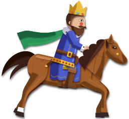
T1Was im Bausatz liegt
Ein Side-Scroller über ein Königreich: Du reitest, sammelst Münzen, baust und wirbst Leute an. Tagsüber wächst das Reich, nachts wird es verteidigt. Jede Figur ist Papierschnitt, gerendert aus offenen Bauplänen.
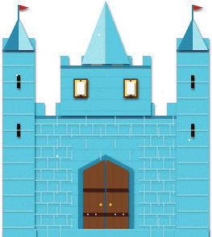
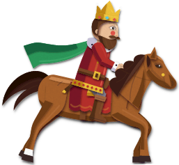
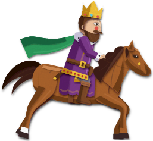
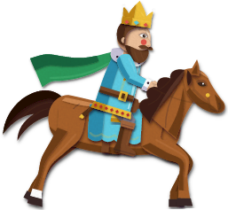
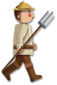
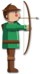
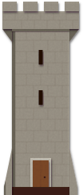
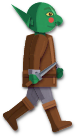
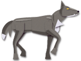
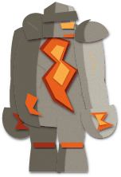
Was nicht im Bausatz liegt
Hier fehlt absichtlich etwas. Das Spiel läuft auf deinem Rechner, für sich, ohne Umwege.
- Konto
- Shop
- Werbung
- Tracking
- Server
Frei heißt hier: frei
Keine Anmeldung, keine Käufe im Spiel, keine Telemetrie. Kein Online-Zwang: Gespielt wird allein oder gemeinsam auf dem Sofa, ohne Netz.
Der Quellcode, die Grafik-Baupläne und die Regeln liegen offen. Wer etwas verbessern will, kann es tun.
Quellcode offen · frei für nicht-kommerzielle Nutzung: spielen, ändern, weitergeben. Was die Lizenz erlaubt
Drehscheibe: Tag und Nacht
Ausschneiden, mit einer Musterbeutelklammer befestigen, drehen. Oder einfach hier drehen.
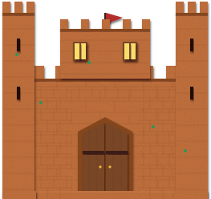
Tag NachtBei Tag bauen
- Gold aus Truhen und von Gegnern sammeln
- Landstreicher anwerben, sie werden Bauern
- Holz und Stein holen lassen
- Mauern, Türme und die Burg ausbauen
Bei Nacht halten
- Gegnerwellen rennen auf das Lager zu
- Bogenschützen feuern von den Türmen
- Der Monarch kämpft selbst mit
- Wer gut gebaut hat, sieht den Morgen
Faltstreifen: Die Insel geht nach unten
Eine Insel hat mehrere Stufen. Jede ist ein eigenes Land mit eigenem Lager, alle laufen weiter, und jeder Spieler geht, wohin er will.
Mitspieler anschließen
Bis zu vier an einem Bildschirm. Spieler 1 nimmt die Tastatur, alle weiteren ein Xbox-Gamepad.
| Aktion | Tastatur | Gamepad |
|---|---|---|
| Laufen und reiten | A D oder Pfeile | Linker Stick |
| Bestätigen, mitspielen | Leertaste oder Enter | A |
| Pause | Esc | Menu |
Bauanleitung
Ein natives Spiel in Go mit Ebitengine: ein Client für Windows, Linux und macOS. Noch in Entwicklung, fertige Downloads gibt es noch nicht.
- Werkzeug bereitlegen. Go, Task und Bun installieren; die Versionen stehen in
requirements.md. - Quellcode holen. Das Repository von GitHub klonen.
- Bauen. Ein Befehl baut das Spiel samt Papierschnitt-Grafik.
- Spielen. Starten, Gamepads anstecken, loslegen.
# 2 · holen git clone https://github.com/Tenvan/k3c-family cd k3c-family # 3 · bauen task native:game:build # 4 · spielen task native:game
Probedruck
Echte Bilder aus dem nativen Spiel, Entwicklungsstand mit Test-Anzeigen.
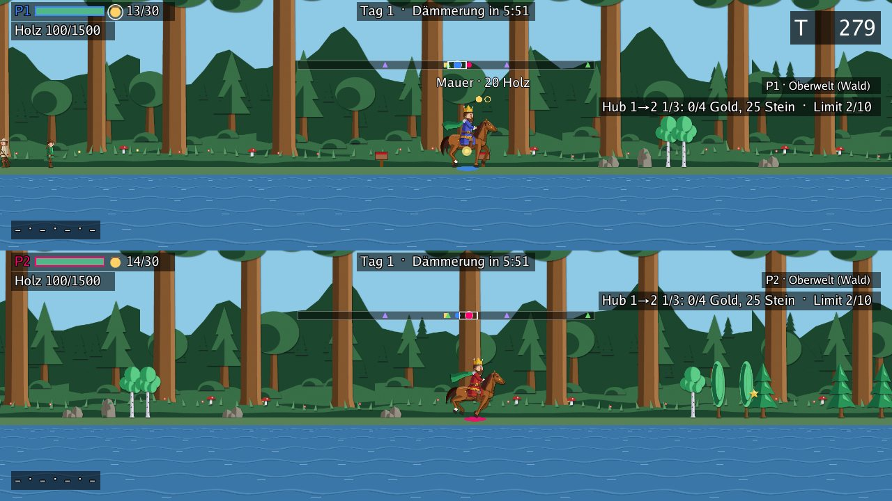
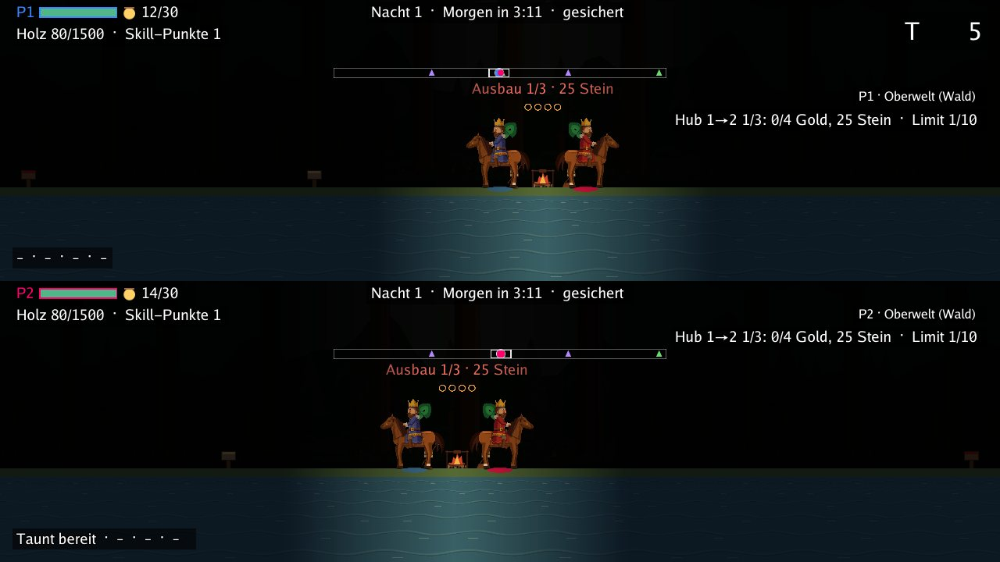